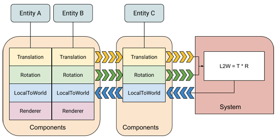
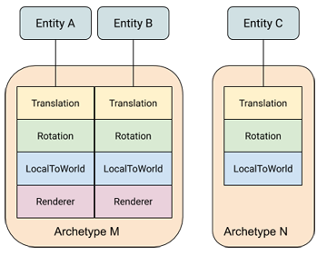
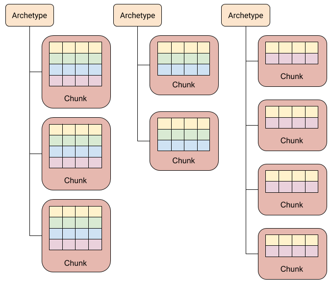

ECS¶
中文: 实体-组件-系统.
英文: Entity-Component-System(ECS).
概述¶
相对于使用面向对象的继承, ECS 有一下几个优点:
- 模块化: ECS 可以增加代码重用, 避免代码体积迅速膨胀.
- 避免继承带来的缺陷: 相比传统的继承, ECS 不用担心"菱形继承", 继承关系复杂等问题.
- 高性能: 数据以组件的形式添加, 内存管理自由, 可以有效利用数据局部性原理(Cache 友好).
ECS 由实体 (entity), 组件 (components) 和系统 (system) 三部分组成, 分别对应标识, 数据和行为. 它们之间的具体关系如下图所示:

实体 (Entity)¶
实体只作为标识, 可向其添加和移除组件. 但实体本身并不包含组件的数据, 类似一个指向了组件数据的指针.
下面是一个实体的简单实现:
-
ID
是实体作为标识的具体实现方法, 存放了一个唯一的 ID. 实体销毁后 ID 会被回收, 并将在后续创建的新实体中继续使用. 这意味着分发实体的类需要维护一个以回收的 ID 表.
-
版本 (Version)
实体只是一个标识, 因此在内存中可能存在多个副本. 且实体销毁后所使用的
id会被重新利用, 无法通过判断id使用已使用来检查实体是否有效.
因此引入了第二个属性version. 实体每次销毁version都增加 1, 以确保已销毁的实体的副本无效化.
组件 (Component)¶
组件用于存储数据, 无需包含成员函数. ， 下面是一个具体组件的简单实现:
上面的组件用于表示实体的变换, 可用于图形渲染或物理模拟等系统. 如有必要, 还可以将该组件进一步拆分为三个单独的组件.
系统 (System)¶
系统负责处理实体组件的数据. 不同的系统根据自身功能, 只关注具备某些组件的实体.
例如, 移动系统负责更新实体位置, 它需要读取并修改每个实体的位置和速度两个组件数据. 因此, 移动系统只需要遍历并操作同时包含位置和速度组件的实体.
Archetypes¶
一种独特的组件类型组合被称为一个 Archetype. 如下图, 可以通过组件类型的组合分为 M, N 两种 Archetype. 对组件类型的改动也会造成实体 Archetype 的改变. 例如, 移除实体 B 的 Renderer 组件会使其的 Archetype 从 M 变为 N.

Archetype 可以看作是组件种类的合集, 因此可以用 std::bitset 来存储这些数据来方便的实现快速的交并集运算.
除了对 std::bitset 进行简单的封装, 还负责管理组件对应的位, 将具体实现方式完全隐藏起来.
每个组件对应一个位, 位的状态表示是否包含该组件. 通常会使用下列几种运算:
- any: a 是否包含 b 的任意一个组件, 即 a 与 b 之间是否存在交集. 只需要判断
a & b是否为 true. - all: a 是否包含 b 的全部组件, 即是 a 是否是 b 的子集. 只需要判断
a & b是否与 b 相等. - none: a 是否没有包含 b 的任何组件, a 与 b 之间没有交集. 只需要判断
a & b是否为 false.
可用于实体和系统之间的解耦, 具有相同组件的实体拥有相同的 Archetype, 对相同组件感兴趣的系统具有相同的 Archetype.
实体通过 Archetype 进行分组, 系统用过 Archetype 查询实体.
类似面向对象中类的实例化, 可以通过 Archetype 来创建实体. 并可以对 Archetype 做加法来实现类似继承的效果.
下面是一个 Archetype 的简单实现:
class Archetype {
public:
// 通过组件类型创建 Archetype
template <typename T, typename... Ts>
static Archetype create() {...}
Archetype(...) {...}
bool any_of(const Archetype&) const {...}
bool all_of(const Archetype&) const {...}
bool none_of(const Archetype&) const {...}
private:
std::bitset<32> signature_; // 每一个位表示一个组件, 若 Archetype 包含某个组件, 则将对应的位设为 1, 否则为 0
inline static std::unordered_map<std::type_index, std::size_t> index_; // 组件类型 -> 在 `signature_` 中对应的位
};
无缝数组¶
这是一个存储组件数据的方法. 该数组能确保元素总是在内存中连续存放的, 以提高遍历数组元素的效率.
被移除的元素将被最后一个元素替代, 因此在移除操作后该数组中元素的索引可能发生变化. 需要维护一张记录虚拟索引到实际索引的映射表.
下面是一个简单的不完整实现:
template <typename T>
class Array {
public:
// 添加或访问元素
T& operator[](std::size_t index) {
const auto [iter, inserted] = index_map_.try_emplace(index, index_map_.size());
if(inserted) {
return data_.emplace_back();
}
return data_[iter->second];
}
// 移除元素
void remove(std::size_t index) {
data_[index_map_[index]] = data_.back();
index_map_.erase(index);
// data_.pop_back();
}
// 获取元素数
std::size_t size() const noexcept { return index_map_.size(); }
private:
std::vector<T> data_; // 实际数据
std::unordered_map<std::size_t, std::size_t> index_map_; // 映射表
};
访问元素只需要一个可以是任意值的虚拟索引, 正好可以使用实体的 ID.
性能剖析¶
Unity ECS¶
内存块(Memory Chunks)¶
实体组件的存储位置取决于其 Archetype. 申请的内存块被简称为 chunk. 每个 chunk 只会存储具有相同 Archetype 的实体.

参见¶
- https://austinmorlan.com/posts/entity_component_system/.
- https://wickedengine.net/2019/09/29/entity-component-system/.